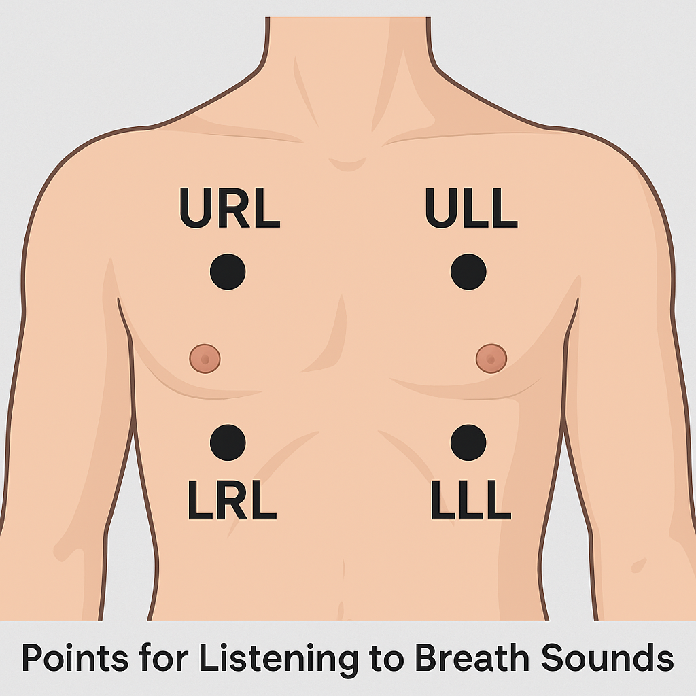

Back
Breath Sound Simulator
Info
New: Breath Sound Learning Center
Learn the sounds before using the simulator
Open →
Tap a region • Choose left/right sounds • Rotate the body
Rotate Body
View: FRONT

RUL
LUL
RLL
LLL
LUL
RUL
LLL
RLL
Neck
Midaxillary
Neck
Midaxillary
Front view is mirrored to patient: screen-left = patient’s
RIGHT
.
Left sound
Normal vesicular
Wheezing
Coarse crackles
Stridor (neck only)
Right sound
Normal vesicular
Wheezing
Coarse crackles
Stridor (neck only)
Audio
Pause
Your browser does not support the audio element.
Breath sounds: what they mean & where to listen
Normal vesicular
Low-pitched
Peripheral
Soft, rustling; inspiratory > expiratory, no pause.
Best heard:
over peripheral lung fields (upper & lower, front and back).
Use:
Baseline for comparison side-to-side.
Wheezing
High-pitched musical
Expiratory±Inspiratory
Narrowed airways → polyphonic “musical” tones.
Common causes:
Asthma, COPD, anaphylaxis, CHF exacerbation (cardiac asthma).
Best heard:
Anterior/upper lobes and diffuse fields; can be heard without a stethoscope if severe.
Coarse crackles
“Bubbling”/“Popping”
Inspiratory
Air through fluid/secretions; lower-pitched, coarse.
Common causes:
Pneumonia, CHF/pulmonary edema, COPD exacerbation.
Best heard:
Posterior bases & lower lobes (back & lateral mid-axillary).
Stridor
Inspiratory, harsh
Upper airway
Monophonic, loud → upper airway obstruction.
Common causes:
Croup, epiglottitis, foreign body, angioedema.
Best heard:
Neck/trachea
(this simulator limits stridor to the neck points).
Red flags: voice change, drooling, severe work of breathing → manage airway early.
Where to listen
Upper (anterior RUL/LUL):
Good for
wheezes
, bronchial changes.
Lower (posterior bases RLL/LLL):
Best for
crackles
(pneumonia/edema).
Lateral mid-axillary:
Middle lobe & lingula; catches focal changes missed anteriorly.
Neck/trachea:
Stridor
, tracheal quality, transmitted upper airway sounds.
Technique tips:
Compare side-to-side at same levels; listen to a full insp/exp cycle; have the patient sit up if possible; reduce room noise.
Got it